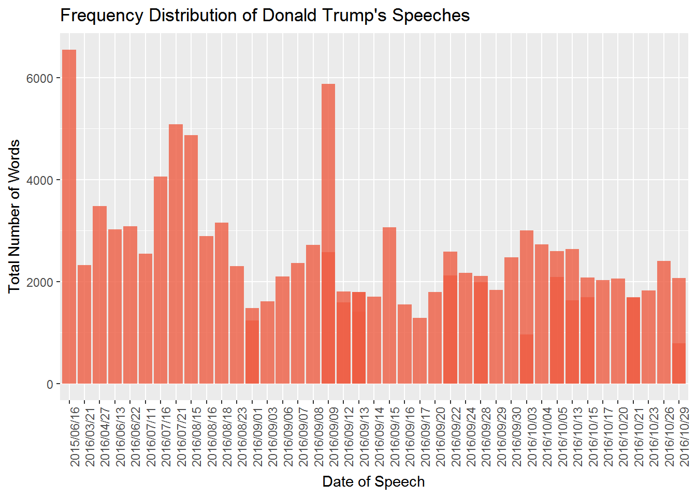
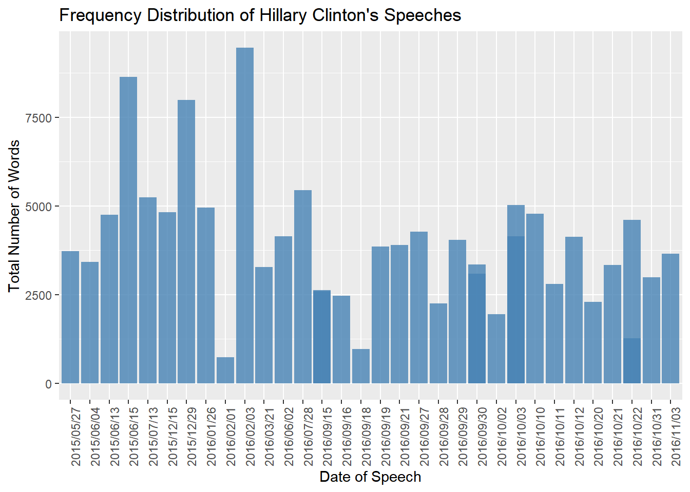
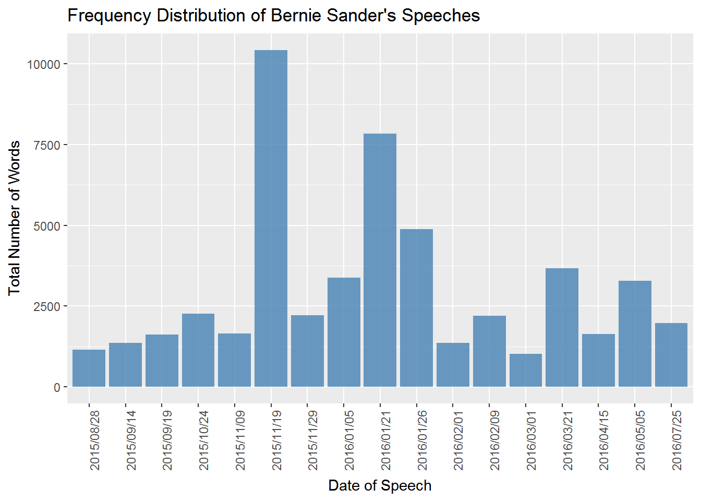
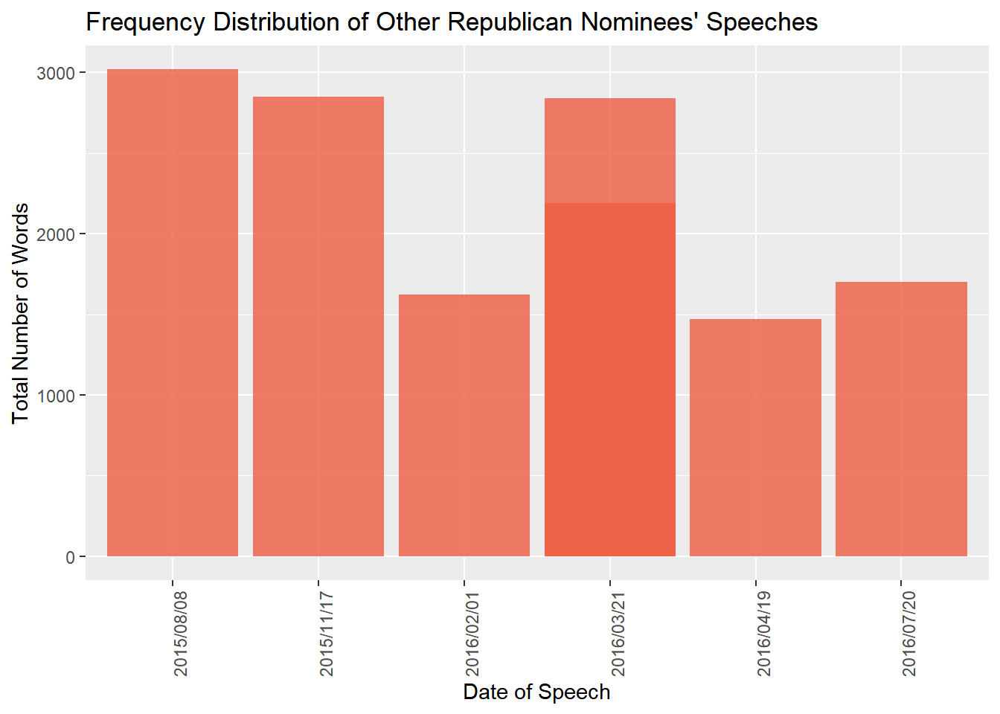
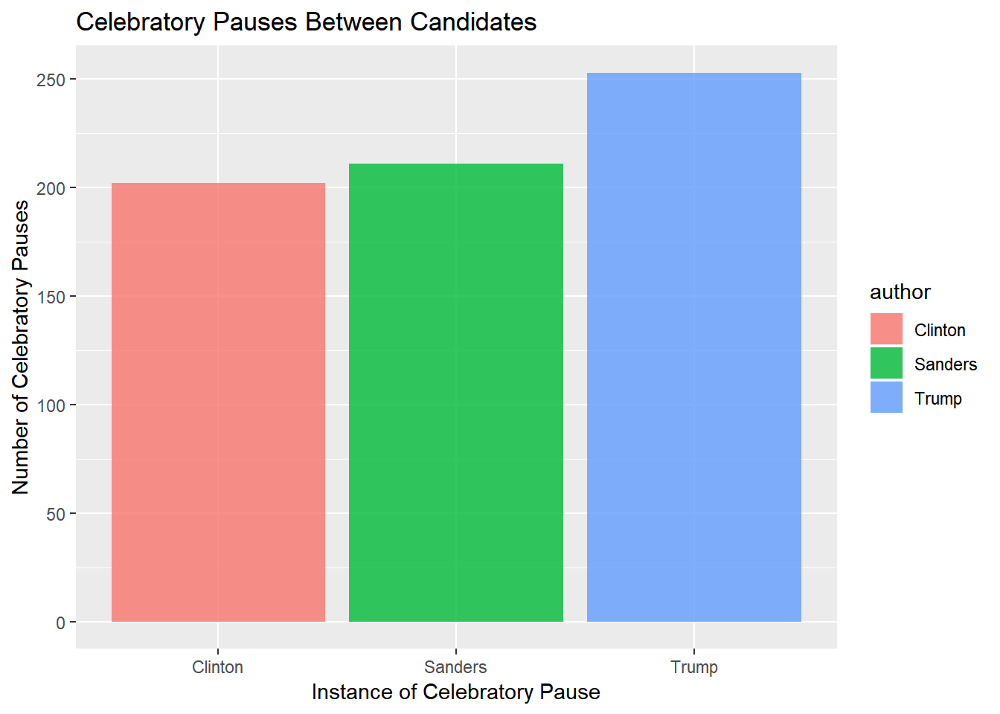
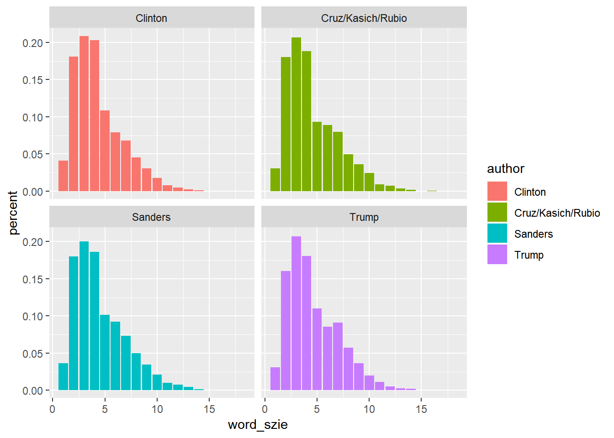

When Donald Trump won the election on November 8th, technically November 9th, many individuals found themselves shocked and speechless. Time and time again, this particular candidate stepped away from comments, actions, and scandals that would otherwise have condemned other politicians to political suicide. From his opening speech to his closing remarks, Donald Trump seemed to be an unstoppable whirlwind of decisive speech. The question becomes how was Donald Trump’s rhetoric different yet crucial to his victory in the 2016 Presidential election.
The appearance of the President has been crucial throughout America’s history from early Presidents’ image of statesmen and dignitaries to JFK’s appearance and defeat of Richard Nixon in the first ever televised debate. A crucial component to the image of the Presidency are the words spoken, the rhetoric used, and the issues the candidates focus on. The speeches and debates offer the voting public a means in which to sift through policy intentions and past accomplishments in order to get at the quality and character of each candidate. This is one of the reasons that over the years’ politicians have perfected the polished image and memorized the perfect speeches. However, there is a component of uncertainty when a candidate steps onto a stage or into the public eye. In the spotlight, the candidate the craft themselves in whatever manner they wish to. It is when a candidate shifts from the prepared speeches that he/she truly connects with the voter and make a lasting impression. Therefore, a candidate giving a speech must walk the line between professional and charismatic, and it is through the analysis of these campaign speeches that we can begin to break down the differences and similarities within candidates, in hopes of peaking behind the curtain and uncovering how rhetoric, and in this case sentiment and topics, play a role in defining a candidate and potentially answering the question of to what extend rhetoric is important in determining elections.
For this project, I scrapped Presidential campaign speeches from the summer of 2015 all the way to the night before the election (November 2016). I was able to collect 57 speeches from Donald Trump, 35 from Hillary Clinton, 16 from Bernie Sanders, and 6 from the three prominent Republican Nominees (John Kasich, Marco Rubio, & Ted Cruz). There are more speeches from Trump and Clinton due to their campaigns running the entire 15 months, whereas the other candidates lost in the primaries and ended their campaigns in the Summer of 2016. This asymmetry in speeches may decrease the generalizability of our findings. I also attempted to avoid interviews seeing as it would be challenging to parse between the speakers. In this data collection process, there may have been potential for selection bias towards particular candidates’ speeches, however, I did not come across any explicit selection bias in scrapping the data. The total corpus ended up consisting of 336,903 words.
To begin, we will do some preliminary analyses and examine whether or not there are any fundamental differences between candidates.
| month | day | year | sum(n) |
|---|---|---|---|
| March | 21 | 2016 | 2364 |
| April | 27 | 2016 | 3526 |
| June | 13 | 2016 | 3066 |
| June | 16 | 2015 | 6592 |
| June | 22 | 2016 | 3132 |
| July | 11 | 2016 | 2594 |
| July | 16 | 2016 | 4101 |
| July | 21 | 2016 | 5131 |
| August | 15 | 2016 | 4915 |
| August | 16 | 2016 | 2935 |
| August | 18 | 2016 | 3206 |
| August | 23 | 2016 | 2344 |
| September | 1 | 2016 | 2806 |
| September | 12 | 2016 | 3492 |
| September | 13 | 2016 | 5140 |
| September | 14 | 2016 | 1753 |
| September | 15 | 2016 | 3108 |
| September | 16 | 2016 | 1593 |
| September | 17 | 2016 | 1336 |
| September | 20 | 2016 | 1838 |
| September | 22 | 2016 | 4802 |
| September | 24 | 2016 | 2220 |
| September | 28 | 2016 | 4191 |
| September | 29 | 2016 | 1886 |
| September | 3 | 2016 | 1662 |
| September | 30 | 2016 | 2524 |
| September | 6 | 2016 | 2146 |
| September | 7 | 2016 | 2411 |
| September | 8 | 2016 | 2760 |
| September | 9 | 2016 | 8544 |
| October | 13 | 2016 | 4361 |
| October | 15 | 2016 | 3858 |
| October | 17 | 2016 | 2074 |
| October | 20 | 2016 | 2103 |
| October | 21 | 2016 | 3466 |
| October | 23 | 2016 | 1870 |
| October | 26 | 2016 | 2448 |
| October | 29 | 2016 | 2954 |
| October | 3 | 2016 | 4060 |
| October | 4 | 2016 | 2774 |
| October | 5 | 2016 | 4786 |

There seem to be about 4 instances when Donald Trump’s speeches reach or exceed 5,000 words. 5,000 words is about the size of a 20-page document. In addition, it is important to notice that the darker shaded lines are other speeches that he gave on the same day. There are about 12 days in which we gave two separate speeches.
| month | day | year | sum(n) |
|---|---|---|---|
| January | 26 | 2016 | 4946 |
| February | 1 | 2016 | 739 |
| February | 3 | 2016 | 9452 |
| March | 21 | 2016 | 3280 |
| May | 27 | 2015 | 3729 |
| June | 13 | 2015 | 4745 |
| June | 15 | 2015 | 8631 |
| June | 2 | 2016 | 4142 |
| June | 4 | 2015 | 3416 |
| July | 13 | 2015 | 5236 |
| July | 28 | 2016 | 5440 |
| September | 15 | 2016 | 5230 |
| September | 16 | 2016 | 2467 |
| September | 18 | 2016 | 957 |
| September | 19 | 2016 | 3849 |
| September | 21 | 2016 | 3895 |
| September | 27 | 2016 | 4271 |
| September | 28 | 2016 | 2255 |
| September | 29 | 2016 | 4035 |
| September | 30 | 2016 | 6434 |
| October | 10 | 2016 | 4776 |
| October | 11 | 2016 | 2796 |
| October | 12 | 2016 | 4130 |
| October | 2 | 2016 | 1941 |
| October | 20 | 2016 | 2290 |
| October | 21 | 2016 | 3337 |
| October | 22 | 2016 | 5871 |
| October | 3 | 2016 | 9160 |
| October | 31 | 2016 | 2984 |
| November | 3 | 2016 | 3650 |
| December | 15 | 2015 | 4815 |
| December | 29 | 2015 | 7989 |

Comparatively, Hillary has about 7 speeches that approach or exceed 5,000 words, and she only has 4 instances of more than a single speech on a given day. From this, we can start to see that Hillary speaks for longer, whereas Trump speaks at more events. From here, we could perform a single t-test on the differences in average word count to see if there was a statistical significance.
| month | day | year | sum(n) |
|---|---|---|---|
| January | 21 | 2016 | 7892 |
| January | 26 | 2016 | 4923 |
| January | 5 | 2016 | 3429 |
| February | 1 | 2016 | 1410 |
| February | 9 | 2016 | 2250 |
| March | 1 | 2016 | 1069 |
| March | 21 | 2016 | 3713 |
| April | 15 | 2016 | 1669 |
| May | 5 | 2016 | 3327 |
| July | 25 | 2016 | 2009 |
| August | 28 | 2015 | 1200 |
| September | 14 | 2015 | 1407 |
| September | 19 | 2015 | 1668 |
| October | 24 | 2015 | 2309 |
| November | 19 | 2015 | 10474 |
| November | 29 | 2015 | 2258 |
| November | 9 | 2015 | 1692 |

With the Sander’s data set, we notice a significant drop in word count with about three outliers. We also see that he has zero instances of multiple speeches on a given day.
| month | day | year | sum(n) |
|---|---|---|---|
| February | 1 | 2016 | 1623 |
| March | 21 | 2016 | 5029 |
| April | 19 | 2016 | 1469 |
| July | 20 | 2016 | 1700 |
| August | 8 | 2015 | 3018 |
| November | 17 | 2015 | 2849 |

Again, with six speeches between three men, we see a significant drop in overall word count and one instance of where two candidates gave speeches on the same day. I believe that this drop in word count is due to the time period these speeches were given in. Campaigning during primaries is more rally oriented than speech oriented. This is why we have fewer speeches during the early months of the campaign.
Within the documents, there were instances of applause or chanting, so in the table below, we have the number of instances these occur within the speeches.
| author | n |
|---|---|
| Clinton | 202 |
| Sanders | 211 |
| Trump | 253 |
As stated previously, there may be instance of selection bias, and this may be one of those instances. Different scribes may have used different standards in tracking and reporting crowd behavior. However, with the results we do have, Sanders has a number of these celebratory pauses especially for the number of speeches he gave. This could be an indicator of how he was able to relate to his audience. Clinton and Trump seem to have similar numbers for the respective amount of speeches they gave. We have no data on the other Republican candidates due to the small sample size.

This graph shows us that there are not equal distributions among cheering. We do see that Clinton has more instances of cheering, whereas Trump and Sanders seem to have very dense instances of cheering. This either confirms the idea of selection bias pertaining to cheering, or it could be indicative of a variety of speech style that the candidates were able to use in order to elicit high energy response. We must also take into account the disruptions that would occur at Trump rallies, yet there were never instances of 10, 20, let along 50 individual disruptions at a given rally.
Now, we can begin to break down the individual words that candidates used. This table provides percentage and number of words of a given size by each candidate.
| author | word_szie | n | percent |
|---|---|---|---|
| Clinton | 1 | 5818 | 0.0412952 |
| Clinton | 2 | 25471 | 0.1807890 |
| Clinton | 3 | 29426 | 0.2088609 |
| Clinton | 4 | 28594 | 0.2029555 |
| Clinton | 5 | 15306 | 0.1086395 |
| Clinton | 6 | 11161 | 0.0792190 |
| Clinton | 7 | 9617 | 0.0682599 |
| Clinton | 8 | 6364 | 0.0451706 |
| Clinton | 9 | 4298 | 0.0305065 |
| Clinton | 10 | 2471 | 0.0175388 |
| Clinton | 11 | 1077 | 0.0076444 |
| Clinton | 12 | 681 | 0.0048336 |
| Clinton | 13 | 384 | 0.0027256 |
| Clinton | 14 | 144 | 0.0010221 |
| Clinton | 15 | 36 | 0.0002555 |
| Clinton | 16 | 15 | 0.0001065 |
| Clinton | 17 | 3 | 0.0000213 |
| Clinton | 18 | 22 | 0.0001562 |
| Cruz/Kasich/Rubio | 1 | 484 | 0.0308516 |
| Cruz/Kasich/Rubio | 2 | 2827 | 0.1802014 |
| Cruz/Kasich/Rubio | 3 | 3239 | 0.2064635 |
| Cruz/Kasich/Rubio | 4 | 2953 | 0.1882330 |
| Cruz/Kasich/Rubio | 5 | 1460 | 0.0930648 |
| Cruz/Kasich/Rubio | 6 | 1399 | 0.0891764 |
| Cruz/Kasich/Rubio | 7 | 1249 | 0.0796150 |
| Cruz/Kasich/Rubio | 8 | 776 | 0.0494646 |
| Cruz/Kasich/Rubio | 9 | 564 | 0.0359510 |
| Cruz/Kasich/Rubio | 10 | 382 | 0.0243498 |
| Cruz/Kasich/Rubio | 11 | 144 | 0.0091790 |
| Cruz/Kasich/Rubio | 12 | 117 | 0.0074579 |
| Cruz/Kasich/Rubio | 13 | 56 | 0.0035696 |
| Cruz/Kasich/Rubio | 14 | 24 | 0.0015298 |
| Cruz/Kasich/Rubio | 15 | 4 | 0.0002550 |
| Cruz/Kasich/Rubio | 16 | 10 | 0.0006374 |
| Sanders | 1 | 1929 | 0.0366041 |
| Sanders | 2 | 9487 | 0.1800224 |
| Sanders | 3 | 10567 | 0.2005161 |
| Sanders | 4 | 9811 | 0.1861705 |
| Sanders | 5 | 5355 | 0.1016148 |
| Sanders | 6 | 4854 | 0.0921080 |
| Sanders | 7 | 3875 | 0.0735308 |
| Sanders | 8 | 2636 | 0.0500199 |
| Sanders | 9 | 1813 | 0.0344029 |
| Sanders | 10 | 1121 | 0.0212718 |
| Sanders | 11 | 516 | 0.0097915 |
| Sanders | 12 | 389 | 0.0073815 |
| Sanders | 13 | 231 | 0.0043834 |
| Sanders | 14 | 75 | 0.0014232 |
| Sanders | 15 | 26 | 0.0004934 |
| Sanders | 16 | 6 | 0.0001139 |
| Sanders | 17 | 3 | 0.0000569 |
| Sanders | 18 | 5 | 0.0000949 |
| Trump | 1 | 4128 | 0.0310675 |
| Trump | 2 | 21312 | 0.1603950 |
| Trump | 3 | 27480 | 0.2068156 |
| Trump | 4 | 24039 | 0.1809185 |
| Trump | 5 | 14585 | 0.1097673 |
| Trump | 6 | 11365 | 0.0855334 |
| Trump | 7 | 12104 | 0.0910952 |
| Trump | 8 | 7600 | 0.0571979 |
| Trump | 9 | 4828 | 0.0363357 |
| Trump | 10 | 2634 | 0.0198236 |
| Trump | 11 | 1475 | 0.0111009 |
| Trump | 12 | 653 | 0.0049145 |
| Trump | 13 | 379 | 0.0028524 |
| Trump | 14 | 253 | 0.0019041 |
| Trump | 15 | 19 | 0.0001430 |
| Trump | 16 | 13 | 0.0000978 |
| Trump | 17 | 1 | 0.0000075 |
| Trump | 18 | 4 | 0.0000301 |
Below is the graph for an easier visualization:

In terms of size, there is no real difference. It is interesting to visualize, but for the most part, we seem to use words with 3, 4, and 5 letters, and campaign speeches are no different. This may be in an attempt to relate and come across to the everyday-man, but it is also just the structure of our language.